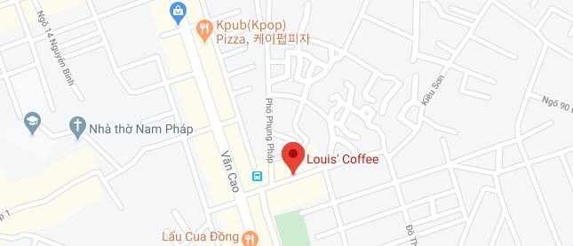
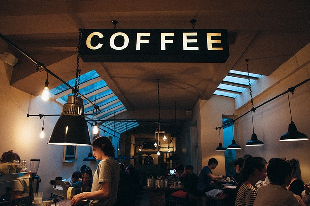
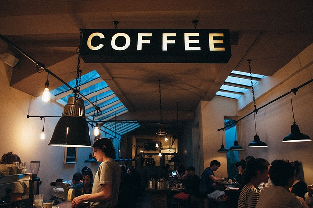

Description
Louis cafe is an Vietnam coffee company and coffeehouse chain. Louis cafe was founded in Hai phong in 2018. As of early 2019, the company operates over 100 locations in Vietnam.
Information
Address : 94 Đường 193 Văn Cao, Đằng Giang, Ngô Quyền, Hải Phòng, 베트남
Phone : +84 2937 737 272
Open : 07:00 ~ 23:00
Location
비슷한 분위기의 카페 추천
 
